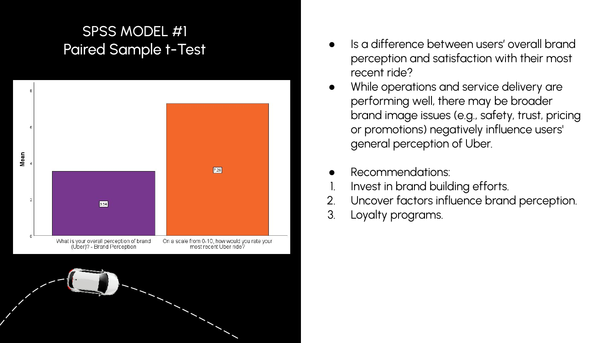
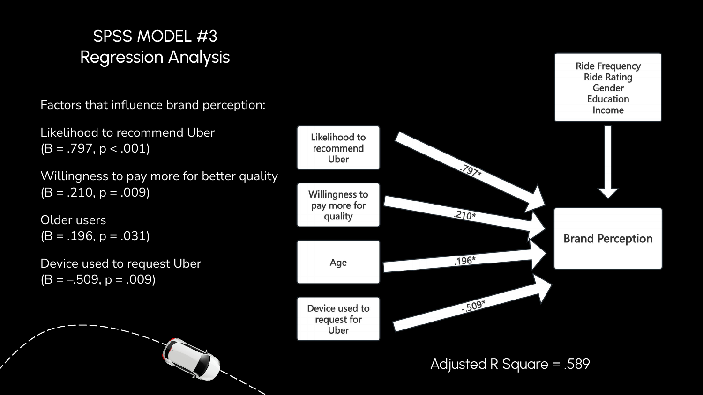
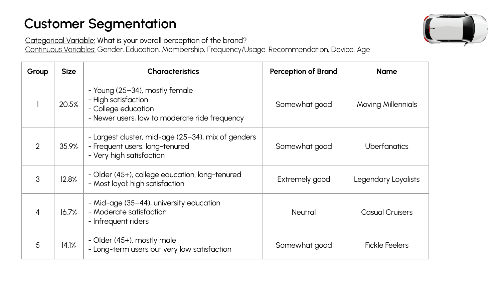
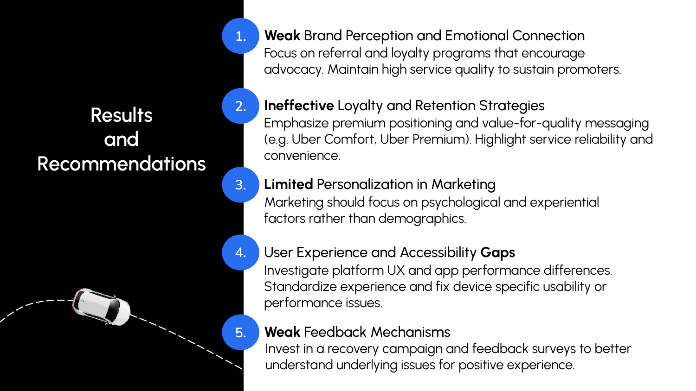

01 · Design the research
Built a structured Qualtrics questionnaire covering brand perception, experience, loyalty, promotions, app usability, safety, demographics, and other relevant variables.
PROJECT 04 · MARKET RESEARCH
Using primary research and statistical analysis to understand brand perception, rider experience, loyalty, and customer segments.
01 / THE QUESTION
The research examined how brand perception, recent ride experience, customer loyalty, satisfaction, recommendation intent, and willingness to pay relate to the Uber experience.
The study also explored user preferences, app experience, demographics, and customer segments to identify potential marketing opportunities.
02 / FEATURED OUTPUT
The project combined survey responses and statistical analysis to investigate how customers' immediate experiences relate to their broader perception of Uber.

03 / APPROACH
The research moved from questionnaire design and data collection to statistical testing, regression analysis, and customer segmentation.
Built a structured Qualtrics questionnaire covering brand perception, experience, loyalty, promotions, app usability, safety, demographics, and other relevant variables.
Used paired-samples t-tests and other statistical procedures to examine relationships and differences among customer experience measures.
Applied regression analysis to examine variables associated with overall brand perception.
Used cluster analysis to identify distinct customer groups with different usage, satisfaction, tenure, and perception patterns.
Connected the statistical findings to recommendations involving loyalty, brand communication, customer experience, and feedback.
04 / ANALYSIS 01
A paired-samples t-test compared respondents' overall perception of Uber with their assessment of their most recent ride experience.
The submitted analysis reported a statistically significant difference between overall brand perception and recent ride experience. The project used the result to investigate whether immediate service experiences and broader brand perceptions were fully aligned.
05 / ANALYSIS 02
A multiple regression model examined variables associated with respondents' overall perception of the Uber brand.

The submitted model reported an adjusted R² of 0.589. Significant predictors identified in the analysis included likelihood to recommend Uber, willingness to pay more for greater quality or convenience, age, and device used to request Uber.
06 / ANALYSIS 03
Cluster analysis identified five rider groups with different usage patterns, tenure, satisfaction levels, and brand perceptions.

Older, long-tenured riders associated with high satisfaction and positive brand perceptions.
Younger riders with moderate usage and positive satisfaction patterns.
Longer-term riders characterized by lower satisfaction and weaker brand sentiment.
More occasional users with relatively neutral brand perceptions.
The largest segment, characterized by frequent usage, long tenure, and high satisfaction.
07 / ANALYSIS 04
The project translated its findings into potential strategies for strengthening brand connection, loyalty, personalization, customer experience, and feedback.

Connect the immediate service experience with broader brand values through in-app and post-ride communications.
Explore referral, reward, and status-oriented strategies based on usage and customer tenure.
Use customer characteristics and behavioral insights to support more relevant engagement.
Investigate app and device-specific experience differences before scaling improvements.
08 / KEY FINDINGS
The paired comparison reported a statistically significant difference between overall brand perception and recent ride experience.
Recommendation intent was among the significant predictors included in the submitted regression model for overall brand perception.
Cluster analysis identified five customer groups with differing usage, tenure, satisfaction, and perception characteristics.
The research highlighted potential opportunities across loyalty, communications, personalization, app experience, and feedback.
09 / RESEARCH IMPLICATIONS
Use communications to connect the concrete ride experience with Uber's broader brand proposition.
Consider loyalty and referral mechanisms that recognize different customer behaviors and levels of engagement.
Use customer and device-level insights to identify areas where friction may affect perception and satisfaction.
10 / SKILLS & TOOLS
11 / ORIGINAL DELIVERABLES
View the original presentation and final report for the complete questionnaire, statistical output, methodology, findings, and recommendations.